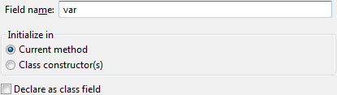

There is a flag to let the refactoring create a class field instead of an instance variable.| Option | Description |
|---|---|
| Field Name | The new name of the converted field. |
| Initialize in |
|
| Declare as class field | Converts the local variable into a class field instead of a instance field when checked. |